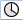

The trace provides you with an oscilloscope function that allows the following data (signals) to be graphically displayed:
General NC data
PLC data
The function serves for troubleshooting and resolving faults as well as to analyze the machine and process performance. In a session, data (signals) are recorded briefly before and after an event.
The recorded data is optically displayed in the form of curves, the so-called characteristics graphs.
You have the option of individually setting the recording type.
You can store the recorded data in an XML file. The saved file can then be re-loaded so that it can be evaluated at a later time.
Signals (data) specify what is to be recorded:
NC variables (axis data, drive data, channel data, etc.)
PLC data
Cyclic events | |
 | Interpolation clock cycle (IPO clock cycle) |
PLC cycle OB1 | |
Position control clock cycle (servo clock cycle) | |
Non-cyclic events | |
Recording using a trigger
Manually starting and stopping a trace
The following functions are available to analyze the result:
Scaling characteristic graphs
Zooming characteristic graphs
Defining a characteristic range using markers